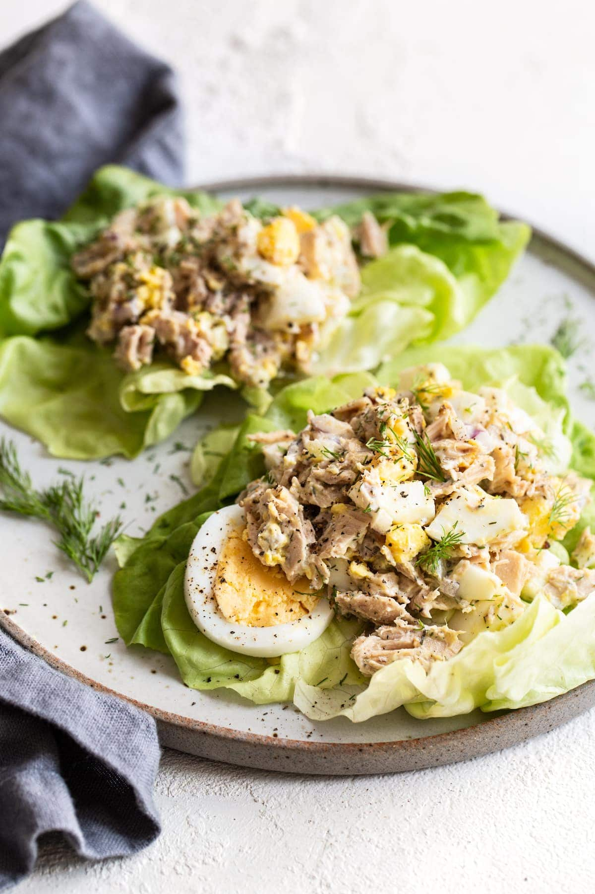

Tuna Salad

Tuna Salad
Description
No matter how you mix it, making tuna salad at home is one of the easiest, most satisfying meals you can whip up from pantry ingredients.
Ingredients
- 1 can of tuna chunks
- 2 stalks of celery
- 1 small red onion
- 3 tbsp sweet pickle relish
- 1 clove of garlic
- 1 tbsp mayonnaise
- 1 tsp Dijon mustard
- Salt and pepper
- A dash of lemon juice
Steps
- Open tuna can, drain. Put in a large bowl
- Chop celery, pickles, onion, garlic. Add to bowl
- Add mayonnaise, mustard, salt and pepper, lemon juice
- Mix everything